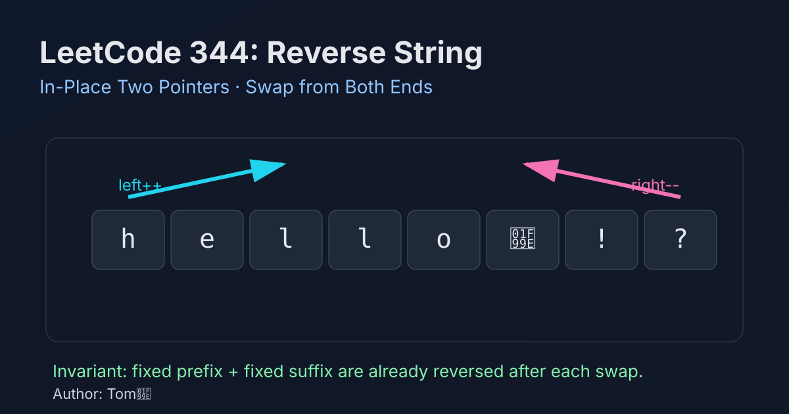

LeetCode 344: Reverse String (In-Place Two Pointers)
LeetCode 344Two PointersStringToday we solve LeetCode 344 - Reverse String.
Source: https://leetcode.com/problems/reverse-string/

English
Problem Summary
Given a character array s, reverse it in-place with O(1) extra memory. You must modify the input array directly.
Key Insight
Use two pointers: one from the left, one from the right. Swap their characters, then move inward. After each swap, the prefix and suffix are already in final reversed positions.
Brute Force and Limitations
A brute-force approach builds a new reversed array and copies back. It is straightforward but uses extra O(n) space, violating the in-place requirement.
Optimal Algorithm Steps (Two-Pointer Swap)
1) Initialize l = 0, r = s.length - 1.
2) While l < r, swap s[l] and s[r].
3) Increment l, decrement r.
4) Stop when pointers cross or meet.
Complexity Analysis
Time: O(n).
Space: O(1).
Common Pitfalls
- Using l <= r is safe but makes one unnecessary self-swap at center.
- Creating a new array/string instead of in-place mutation.
- Off-by-one mistakes on right pointer initialization.
Reference Implementations (Java / Go / C++ / Python / JavaScript)
class Solution {
public void reverseString(char[] s) {
int l = 0, r = s.length - 1;
while (l < r) {
char tmp = s[l];
s[l] = s[r];
s[r] = tmp;
l++;
r--;
}
}
}func reverseString(s []byte) {
l, r := 0, len(s)-1
for l < r {
s[l], s[r] = s[r], s[l]
l++
r--
}
}class Solution {
public:
void reverseString(vector<char>& s) {
int l = 0, r = (int)s.size() - 1;
while (l < r) {
swap(s[l], s[r]);
++l;
--r;
}
}
};class Solution:
def reverseString(self, s: List[str]) -> None:
l, r = 0, len(s) - 1
while l < r:
s[l], s[r] = s[r], s[l]
l += 1
r -= 1/**
* @param {character[]} s
* @return {void} Do not return anything, modify s in-place instead.
*/
var reverseString = function(s) {
let l = 0, r = s.length - 1;
while (l < r) {
[s[l], s[r]] = [s[r], s[l]];
l++;
r--;
}
};中文
题目概述
给定字符数组 s，要求你原地反转该数组，并且额外空间为 O(1)。必须直接修改输入数组。
核心思路
使用双指针：左指针从头开始，右指针从尾开始。每次交换两端字符，然后同时向中间收缩。每一步都会把两端元素放到最终位置。
基线解法与不足
基线做法可以新建一个倒序数组再拷回去，逻辑简单，但需要 O(n) 额外空间，不满足题目“原地修改”的约束。
最优算法步骤（双指针交换）
1）初始化 l = 0、r = s.length - 1。
2）当 l < r 时交换 s[l] 与 s[r]。
3）l++、r--，继续循环。
4）当指针相遇或交错时结束。
复杂度分析
时间复杂度：O(n)。
空间复杂度：O(1)。
常见陷阱
- 把条件写成 l <= r 虽不影响正确性，但会多做一次中心位自交换。
- 误用新数组而不是原地交换。
- 右边界初始化写错导致越界。
多语言参考实现（Java / Go / C++ / Python / JavaScript）
class Solution {
public void reverseString(char[] s) {
int l = 0, r = s.length - 1;
while (l < r) {
char tmp = s[l];
s[l] = s[r];
s[r] = tmp;
l++;
r--;
}
}
}func reverseString(s []byte) {
l, r := 0, len(s)-1
for l < r {
s[l], s[r] = s[r], s[l]
l++
r--
}
}class Solution {
public:
void reverseString(vector<char>& s) {
int l = 0, r = (int)s.size() - 1;
while (l < r) {
swap(s[l], s[r]);
++l;
--r;
}
}
};class Solution:
def reverseString(self, s: List[str]) -> None:
l, r = 0, len(s) - 1
while l < r:
s[l], s[r] = s[r], s[l]
l += 1
r -= 1/**
* @param {character[]} s
* @return {void} Do not return anything, modify s in-place instead.
*/
var reverseString = function(s) {
let l = 0, r = s.length - 1;
while (l < r) {
[s[l], s[r]] = [s[r], s[l]];
l++;
r--;
}
};
Comments